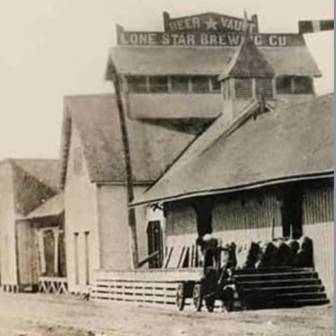
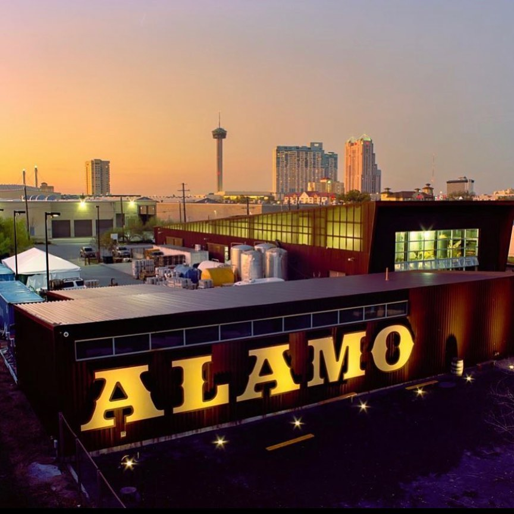

The Long Pour
Texas's First Mechanised Brewery Opens Its Doors
Lone Star Brewing Company opened in San Antonio, Texas — the first mechanised brewery in the state. Alamo Beer's roots trace directly to this moment: a refreshing lager brewed from premium barley malt, Saaz hops, and Texas rice. Made for the working man and well-loved by locals, it became the beer of the backyard before the backyard even had a name.

Lone Star Brewing Company · San Antonio, 1884
The Trademark Recovered. The Beer Reborn.
Decades after Prohibition silenced the taps, the trademark was recovered and the first batch of the new Alamo Beer was brewed. A brand once thought lost was brought back to life — and Texas was thirsty.

Alamo Beer · Reborn 1995
Alamo Beer Company Opens With a Simple Belief
Great beer is best enjoyed in good company. Alamo Beer Company opened its doors with its first of many brews — Alamo Golden Ale — and the conviction that a cold beer shared with good people is one of life's essential pleasures. The rest, they say, is history.

Alamo Beer Company · Est. 2003
Still Brewing. Still Believing.
Over 140 years since the first barrel rolled out of San Antonio, Alamo Beer is still here — still cold, still honest, still made for the people who earn it. Four beers. One legend. The backyard's best.

Alamo Beer Co. · San Antonio, 2025